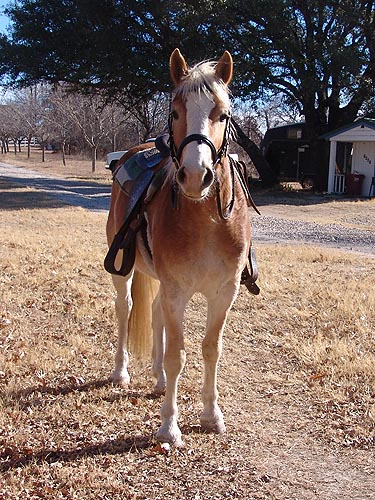
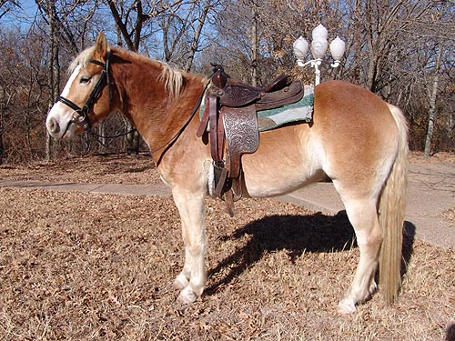

Adirondack NTF I've been trying to fit a saddle to Adiron.
He's not that wide, but with no dip to
his back, the
gussetted saddles end up too high behind.
I hadn't thought of trying the Western
saddle, but once
I did, I realized it fit him just fine.
I also had the chance to try my regular
hunt saddle (which
has been out at the kennels this season
with my hunt horse)
and luckily it also fits him quite well.

Not really easy to get a picture of
yourself riding. At least Adiron didn't mind standing and posing while
I took pictures of him with the Western saddle.
This saddle is a Simco and the English
that fit him is a
Courbette with a med/wide tree.

And a side view. Everything is dry
and windy, but luckily the wind doesn't bother my horses too much. Allergy
season is starting, so it's good that they don't mind sneezing, too.